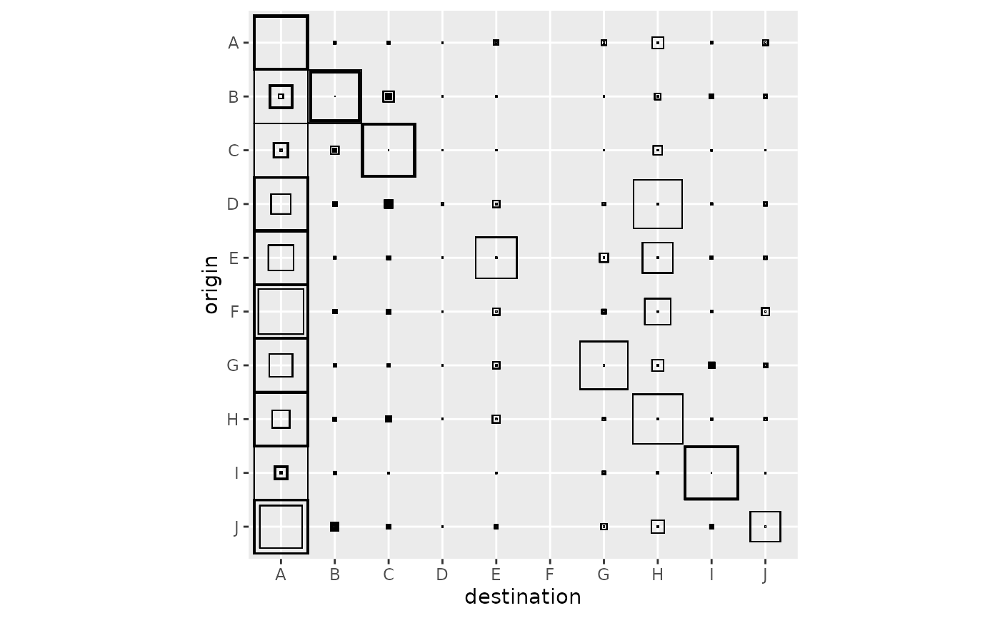
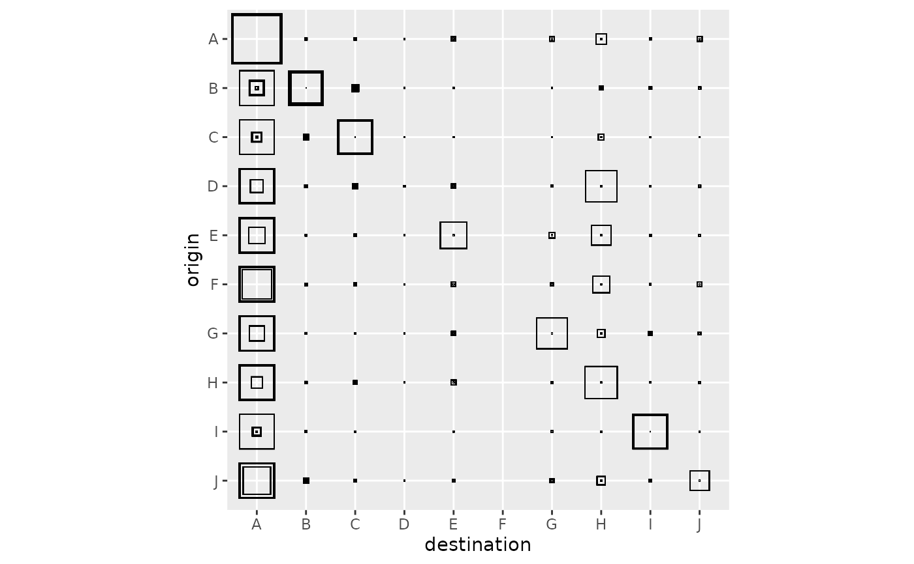
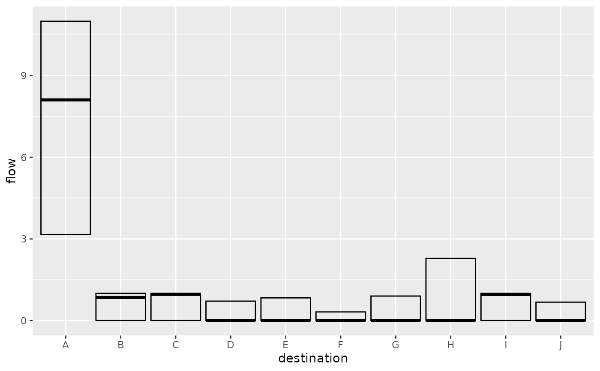
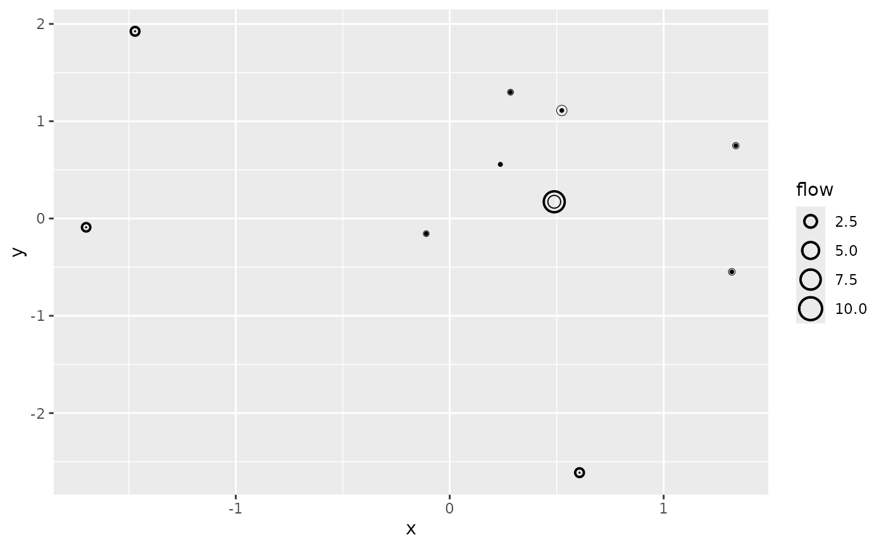
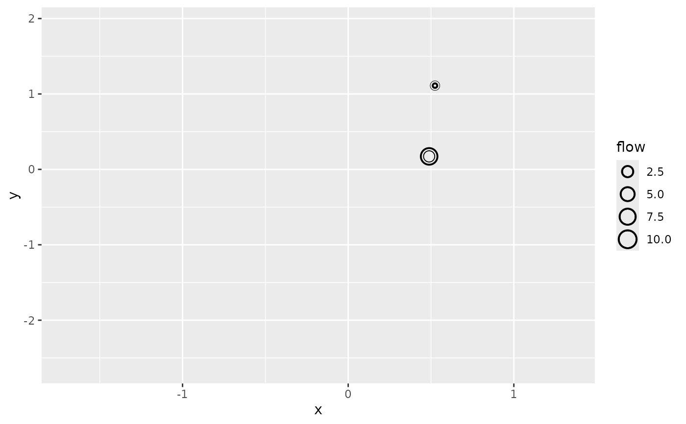

Create a complete variability for a collection of spatial interaction models
Source:R/sim_list_autoplot.R
autoplot.sim_list.RdThis function represents graphically the variability of the flows represented
by the spatial interaction models contained in a collection (a sim_list
object).
Usage
# S3 method for class 'sim_list'
autoplot(
object,
flows = c("full", "destination", "attractiveness"),
with_names = FALSE,
with_positions = FALSE,
cut_off = 100 * .Machine$double.eps^0.5,
adjust_limits = FALSE,
with_labels = FALSE,
qmin = 0.05,
qmax = 0.95,
normalisation = c("none", "origin", "full"),
...
)Arguments
- object
a collection of spatial interaction models, a
sim_list- flows
"full"(default),"destination"or"attractiveness", see details.- with_names
specifies whether the graphical representation includes location names (
FALSEby default)- with_positions
specifies whether the graphical representation is based on location positions (
FALSEby default)- cut_off
cut off limit for inclusion of a graphical primitive when
with_positions = TRUE. In the attractiveness or destination representation, circles are removed when the corresponding upper quantile value is below the cut off.- adjust_limits
if
FALSE(default value), the limits of the position based graph are not adjusted after removing graphical primitives. This eases comparison between graphical representations with different cut off value. IfTRUE, limits are adjusted to the data using the standard ggplot2 behaviour.- with_labels
if
FALSE(default value) names are displayed using plain texts. IfTRUE, names are shown using labels.- qmin
lower quantile, see details (default: 0.05)
- qmax
upper quantile, see details (default: 0.95)
- normalisation
when
flows="full", the flows can be reported without normalisation (normalisation="none", the default value) or they can be normalised, either to sum to one for each origin location (normalisation="origin") or to sum to one globally (normalisation="full").- ...
additional parameters, not used currently
Details
The graphical representation depends on the values of flows and
with_positions. It is based on the data frame representation produced by
fortify.sim_list(). In all cases, the variations of the flows are
represented via quantiles of their distribution over the collection of models
(computed with quantile.sim_list()). For instance, when flows is
"destination", the function computes the quantiles of the incoming flows
observed in the collection at each destination. We consider three quantiles:
a lower quantile
qmindefaulting to 0.05;the median;
a upper quantile
qmaxdefaulting to 0.95.
If with_position is FALSE (default value), the graphical representations
are "abstract". Depending on flows we have the following representations:
"full": the function displays the quantiles over the collection of models of the flows using nested squares (flows()). The graph is organised as matrix with origin locations on rows and destination locations on columns. At each row and column intersection, three nested squares represent respectively the lower quantile, the median and the upper quantile of the distribution of the flows between the corresponding origin and destination locations over the collection of models. The median square borders are thicker than the other two squares. The area of each square is proportional to the represented value."destination": the function displays the quantiles over the collection of models of the incoming flows for each destination location (usingdestination_flow()). Quantiles are represented usingggplot2::geom_crossbar(): each location is represented by a rectangle that spans from its lower quantile to its upper quantile. An intermediate thicker bar represents the median quantile."attractiveness": the function displays the quantiles over the collection of models of the attractiveness of each destination location (as given byattractiveness()). The graphical representation is the same as for"destination". This is interesting for dynamic models where those values are updated during the iterations (seeblvim()for details). When the calculation has converged (seesim_converged()), both"destination"and"attractiveness"graphics should be almost identical.
When the with_names parameter is TRUE, the location names
(location_names()) are used to label the axis of the graphical
representation. If names are not specified, they are replaced by indexes.
When the with_positions parameter is TRUE, the location positions
(location_positions()) are used to produce more "geographically informed"
representations. Notice that if no positions are known for the locations, the
use of with_positions = TRUE is an error. Moreover, flows = "full" is not
supported: the function will issue a warning and revert to the position free
representation if this value is used.
The representations for flows="destination" and flows="attractiveness"
are based on the same principle. Each destination location is represented by
a collection of three nested circles centred on the corresponding location
position, representing respectively the lower quantile, the median and the
upper quantile of the incoming flows or of the attractivenesses. The
diameters of the circles are proportional to the quantities they represent.
The border ot the median circle is thicker than the ones of the other
circles.
When both with_positions and with_names are TRUE, the names of the
destinations are added to the graphical representation. If with_labels is
TRUE the names are represented as labels instead of plain texts (see
ggplot2::geom_label()). If the ggrepel package is installed, its
functions are used instead of ggplot2 native functions.
Examples
positions <- as.matrix(french_cities[1:10, c("th_longitude", "th_latitude")])
distances <- french_cities_distances[1:10, 1:10] / 1000 ## convert to km
production <- rep(1, 10)
attractiveness <- log(french_cities$area[1:10])
all_flows <- grid_blvim(distances, production, seq(1.05, 1.45, by = 0.1),
seq(1, 3, by = 0.5) / 400,
attractiveness,
bipartite = FALSE,
epsilon = 0.1, iter_max = 1000,
destination_data = list(
names = french_cities$name[1:10],
positions = positions
),
origin_data = list(
names = french_cities$name[1:10],
positions = positions
)
)
ggplot2::autoplot(all_flows, with_names = TRUE) +
ggplot2::theme(axis.text.x = ggplot2::element_text(angle = 90))

ggplot2::autoplot(all_flows, with_names = TRUE, normalisation = "none") +
ggplot2::theme(axis.text.x = ggplot2::element_text(angle = 90))

ggplot2::autoplot(all_flows,
flow = "destination", with_names = TRUE,
qmin = 0, qmax = 1
) +
ggplot2::theme(axis.text.x = ggplot2::element_text(angle = 90))

ggplot2::autoplot(all_flows,
flow = "destination", with_positions = TRUE,
qmin = 0, qmax = 1
) + ggplot2::scale_size_continuous(range = c(0, 6)) +
ggplot2::coord_sf(crs = "epsg:4326")

ggplot2::autoplot(all_flows,
flow = "destination", with_positions = TRUE,
qmin = 0, qmax = 1,
cut_off = 1.1
) +
ggplot2::coord_sf(crs = "epsg:4326")

ggplot2::autoplot(all_flows,
flow = "destination", with_positions = TRUE,
with_names = TRUE,
with_labels = TRUE,
qmin = 0, qmax = 1,
cut_off = 1.1
) +
ggplot2::coord_sf(crs = "epsg:4326")